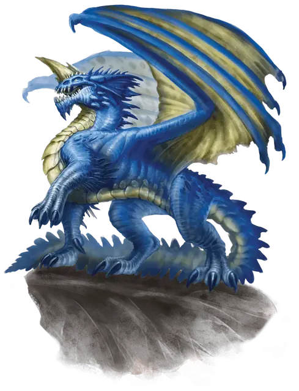

Взрослый синий дракон
Adult Blue Dragon
Огромный Дракон (Цветной), Принципиальный Злой

Класс Защиты 19 Инициатива +10 (20)
Хиты 212 (17к12 + 102)
Скорость 40 футов, Полёта 80 футов, Копания 30 футов
| мод | спас | ||
|---|---|---|---|
| СИЛ | 25 | +7 | +7 |
| ЛОВ | 10 | +0 | +5 |
| ТЕЛ | 23 | +6 | +6 |
| мод | спас | ||
|---|---|---|---|
| ИНТ | 16 | +3 | +3 |
| МДР | 15 | +2 | +7 |
| ХАР | 20 | +5 | +5 |
Иммунитеты Электричество
Чувства Тёмное зрение 120 футов, пассивное Восприятие 22, Слепое зрение 60 футов
Языки Общий, Драконий
Опасность 16 (15 000 опыта или 18 000 опыта в Логове; БВ +5)
Особенности
Легендарное сопротивление (3/день, или 4/день в Логове). Если дракон проваливает спасбросок, он вместо этого может в нём преуспеть.
Действия
Мультиатака. Дракон совершает три атаки Раздиранием. Он может заменить одну из этих атак использованием Сотворения заклинаний (Дребезги).
Раздирание. Бросок рукопашной атаки: +12, досягаемость 10 фт. Попадание: 16 (2к8 + 7) Рубящего урона плюс 5 (1к10) урона Электричеством.
Дыхание молнии (Перезарядка 5–6). Спасбросок Ловкости: Сл 19, каждое существо в Линии длиной 90 футов и шириной 5 футов. Провал: 60 (11к10) урона Электричеством. Успех: Только половина урона.
Сотворение заклинаний. Взрослый синий дракон сотворяет одно из следующих заклинаний, не нуждаясь в Материальных компонентах (заклинательная характеристика — Харизма, Сл спасброска заклинаний 18):
Неограниченно: Волшебная рука, Дребезги, Невидимость, Обнаружение магии
1/день каждое: Наблюдение, Послание
Легендарные действия
У этого существа есть 3 использования Легендарных действий (или 4 использования в его Логове); оно может немедленно после окончания хода другого существа потратить одно использование, чтобы совершить одно из следующих действий. Существо восполняет все потраченные использования в начале каждого своего хода.
Сокрытый полёт. Дракон использует Сотворение заклинаний (Невидимость) на себя и может пролететь на расстояние вплоть до половины своей Скорости полёта. Дракон не может совершить это действие повторно до начала своего следующего хода.
Звуковой удар. Дракон использует Сотворение заклинаний (Дребезги). Дракон не может совершить это действие повторно до начала своего следующего хода.
Взмах хвостом. Дракон совершает одну атаку Раздиранием.
Бонус мастерства +5
Среда обитания Прибрежье, Пустыня
Сокровища Реликварные
Синие драконы
Драконы тирании и гроз
Надменные и властные, синие драконы — это цветные драконы, что жаждут подчинения и собирают последователей столь же ревностно, как иные драконы копят сокровища. Они стремятся обратить свои владения в империи — державы, коих страшатся целые народы.
Черты синих драконов резки и хищны: их венчают острые рога, а чешуя переливается цветами от глубокого сапфира до оттенка грозовых небес. Они обитают в пустынях и бесплодных землях, особенно в тех, где высятся умопомрачительно крутые вершины, с которых открывается вид на многие мили окрестностей. Логова свои они устраивают близ мест символической власти: покинутых твердынь великанов, исполинских изваяний павших империй или монументов, воздвигнутых их собственными почитателями.
Сокровищницы синих драконов полнятся регалиями владычества и шедеврами искусств. Эти драконы не питают интереса к ценностям заурядным или с изъянами, предпочитая им уникальные самоцветы, короны почивших монархов и волшебные предметы, способные расширить сферу их влияния.
Взрослые синие драконы повелевают крохотными империями — будь то земли порабощённых приспешников, теневые преступные сети или анклавами культистов. Бесконечно подозрительные и боящиеся соперников, эти драконы плетут изощрённые интриги, дабы сокрушать врагов, испытывать преданность слуг и обеспечить своё господство на грядущие столетия.
Логова синих драконов
Синие драконы селятся в засушливых землях. Их логова могут быть смертельными ловушками, что станут гробницей для непрошенных гостей, или претенциозными крепостями, откуда драконы замышляют о мировом господстве.
Местность, в которой находится логово взрослого или древнего синего дракона, изменяется из-за его присутствия, что создаёт следующие эффекты:
• Песчаные воронки. В пределах 1 мили от логова чаще образуются песчаные воронки. Каждый раз, когда существо, кроме дракона и его союзников, завершает Долгий отдых в этой области, бросьте 1к20. При результате «1» под существом открывается воронка. Существо должно преуспеть в спасброске Ловкости Сл 15; при провале оно падает в воронку 2к4 × 10 футов глубиной.
• Яростные бури. Область в пределах 1 мили от логова застлана пылевыми вихрями и бурями. Видимость в этой области Слабо заслонена.
Если дракон умирает или перемещает своё логово в другое место, все эти эффекты мгновенно исчезают.